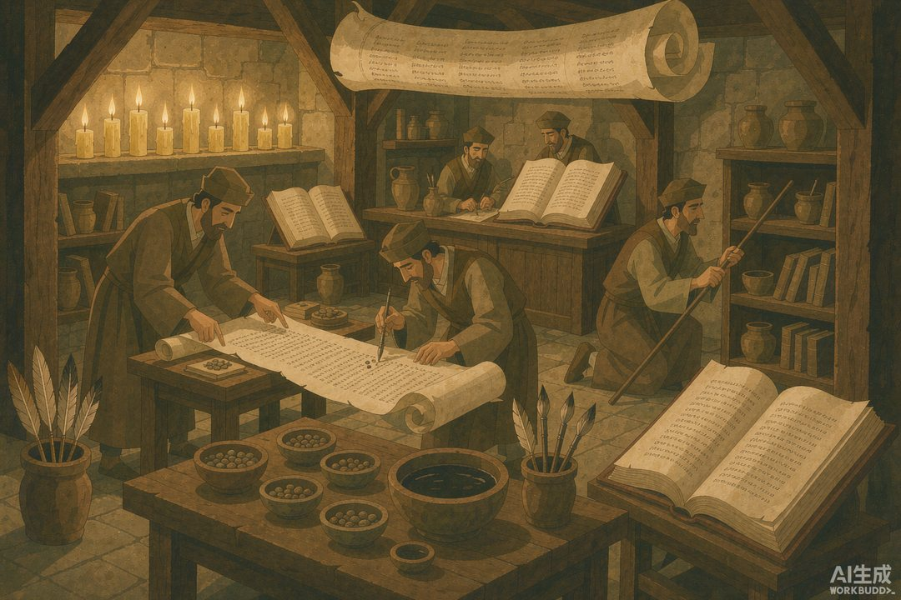

|
信息传播那些事儿 · 卷一 信息的黎明 · 第 16 篇 |
|
犹太口传律法：偏不写下来，反而记得更牢 —— 几十万字的律法，装在一群人的脑子里跑了几百年 |
▲ 犹太经学院的日常：没有翻开的书，只有此起彼伏的背诵和辩论（AI 生成示意图）
|
广场白板留不住信息，羊皮卷又容易被烧、被改、被垄断。有一个民族给出了第三种方案：把律法直接写进人的大脑，用一代代人接力背诵来保存。更离奇的是，这个"偏不写下来"的执念，反而造出了古代保真度最高的信息系统。 |
前面几站的结论似乎很一致：信息要传得远，就得落在载体上——绳子、石板、纸草、白板。载体越大越硬，存得越久。可犹太拉比们盯着这些载体，看到了另一面：写下来的东西，谁都能烧，谁都能改，谁都能抢。圣殿被毁，经卷被焚，流散开始之后，一块石板帮不了任何人。
于是他们做了一个违背直觉的决定：最重要的律法解释体系，偏偏不写下来，规定只能口传——老师背给学生，学生背给自己的学生，一代传一代。这套口传体系，他们叫"口传托拉"，和写在经卷上的"成文托拉"并行。理由很硬核：纸会被烧，但一个分散在千万人脑子里的存储系统，烧不掉、抢不走、改不了——除非把这一整个民族都抹掉。
一 | "重复"就是这门学问的名字 |
先看一个细节，就知道他们是认真的：这套口传律法后来汇编成书，书名叫《密西拿》（Mishnah）——这个词在希伯来语里的本义，就是"重复"。词根 šānâ，又当"研习"讲。在这套系统里，重复和研习是同一个词——背不下来，就不算学过。
这套口传从至少公元前 450 年（以斯拉的时代）就开始运转，一代代"坦拿"学者（专门背律法的老师）接力传了两百年以上，到公元 200 年前后，由领袖犹大·哈纳西（"我们的圣者，王子"）主持定稿。因为帝国动荡、门徒流散，再不整理就要失传了——请注意，即便到了"定稿"这一步，它最初仍以背诵形式存在，写下来只是备份。
定稿的规模令人头皮发麻：全书分六大编——播种、节期、妻室、毁伤（民法刑法）、圣物、洁净，共63 篇、525 章，收录约 4200 条独立律法裁决。农业税、安息日规则、婚约格式、离婚文书、牛撞伤人的赔偿标准、屠宰牲畜的下刀角度……事无巨细，全在一群人的脑子里。这哪里是背课文，这是把一整个国家的民法典、宗教法、食品安全标准打包进人肉硬盘。
▲ 结对辩论：两个人互问互答，把条文磨进记忆（AI 生成示意图）
二 | 记忆也能做成高保真系统 |
靠脑子存东西，最怕的就是走样。人脑不是硬盘，会漏、会错、会添油加醋——第 10 篇我们刚讲过口述史的失真有多可怕。那犹太拉比们靠什么防失真？靠一整套"记忆工程学"。
第一招是结对辩论：学经不许单干，必须两人一组面对面互问互答，一个人背、另一个人挑错，角色随时互换。第二招是韵律化：条文刻意写成短促、对仗、易于吟诵的格式，密西拿的 Hebrew 行文节奏感极强，念起来自带节拍——歌词永远比论文好背，拉比们两千年前就懂。第三招是全员冗余：不是一个人背，是每一代成千上万人同时背同一份内容，单点出错会被群体自动纠错。用今天的话说：分布式存储 + 实时校验 + 多副本容灾。
后来拉比们还发展出争议保全机制：同一问题两大权威学派（希列派与沙买派）观点打架，编辑者干脆把两边的说法都原样保留，不许删任何一方。连"分歧"本身都成了需要保真的数据——因为谁知道哪天哪个说法会成为实用标准呢？这已经是相当现代的版本管理思想了。
这套系统跑出了什么成果？密西拿之后，后世学者对它的逐条讨论又被接力背诵、传承几百年，汇编成《革马拉》——两块加起来就是《塔木德》，巴比伦版厚到今天印出来要几十卷。一部靠嘴传了几个世纪的作品，体量能压垮书架。
三 | 数到每一个字母的强迫症 |
成文经卷那边，防篡改的手法更极致。公元 6 到 9 世纪，一批专职学者——"马所拉学士"（马所拉意为"传统"）——给希伯来圣经做了一套后世叹为观止的校验体系。他们深知抄经手一抖就可能改动经文，于是给文本加上了元音符号、重音标记，还数出了每一卷、每一章、每一句的字数、词数、句数，连哪个词全经出现几次都登记在案。按他们的统计，全部经文共 23203 句。任何一处改动，字数对不上，立刻暴露。这本质上是一套"校验和"机制——和今天下载文件校验 MD5 是同一个思想，只不过他们校验的是神圣文本，用的是人肉计数。
这套强迫症还经受住了最严苛的考古检验。1947 年，死海古卷出土——比现存最晚的马所拉抄本早了一千年的古卷。学者们比对之后发现：尽管隔着上千年抄写传承，两版文本高度一致，差异多到标点和拼写层面，几乎不动内容。千年传输，误差趋近于零。口传加校验，真不是玄学，是硬技术。

▲ 马所拉学士校经：数句子、计字数、标注记号（AI 生成示意图）
四 | 人，才是终极存储介质 |
回头看这个案例，它回答了一个上一站留下的问题：广场传播再热闹，靠的是"人在场"；那人不聚在一起的时候呢？犹太拉比的答案是：把"在场"变成"在脑"——人走到哪，存储介质就带到哪。国家亡了、圣殿毁了、人口流散到世界各地，只要凑够十个成年人（犹太教的最低公共祈祷人数），"移动硬盘"就能现场组网，把整套律法原样恢复出来。
代价同样直白：训练成本极高。培养一个能背下整套体系的学者，需要十几年寒暑不辍的训练；这套系统高度依赖"师徒链"不断线——链条一断，数据就真丢了。而且它天然有容量上限：能被完整背下的内容，终究要靠极简、押韵、条列化压缩，复杂叙事很难塞进去。所以到公元 200 年前后，这套口传体系最终还是允许落笔成书——口传负责保真，笔录负责冗余，两条腿走路，而不是谁取代谁。
到这里，信息的"公开广播"和"人脑存储"两条线都走过了。但别忘了，信息还有另一个永恒的刚需：有些话，你不是想让更多人听到，而是死也不想被第三个人看懂。战报、密约、密码——古人怎么解决"只能让对的人看懂"这个问题？下一站，看蜡板、隐写术和倒着写的字：人类最早的加密战争。
|
数字锚点 · 犹太口传律法 | |||||||||||||||
| |||||||||||||||
|
🔔 下篇预告 · 第 17 篇《古代加密术》——蜡板里藏纹身、头上顶字送信、把字母表倒过来写：为了不让第三个人看懂，古人把创造力点满了。保密与窃密这对孪生兄弟，怎么从宫廷斗争一路缠到战场？ |
史料转引：《密西拿》编纂与结构通行研究（六编 63 篇 525 章，犹大·哈纳西约公元 200 年定稿）；"马所拉"经文校验传统（含 23203 句统计）与 1947 年死海古卷比对研究；犹太口传律法（Torah she-be'al peh）通说。配图为 AI 生成示意图。